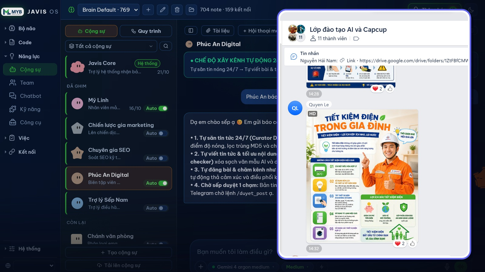
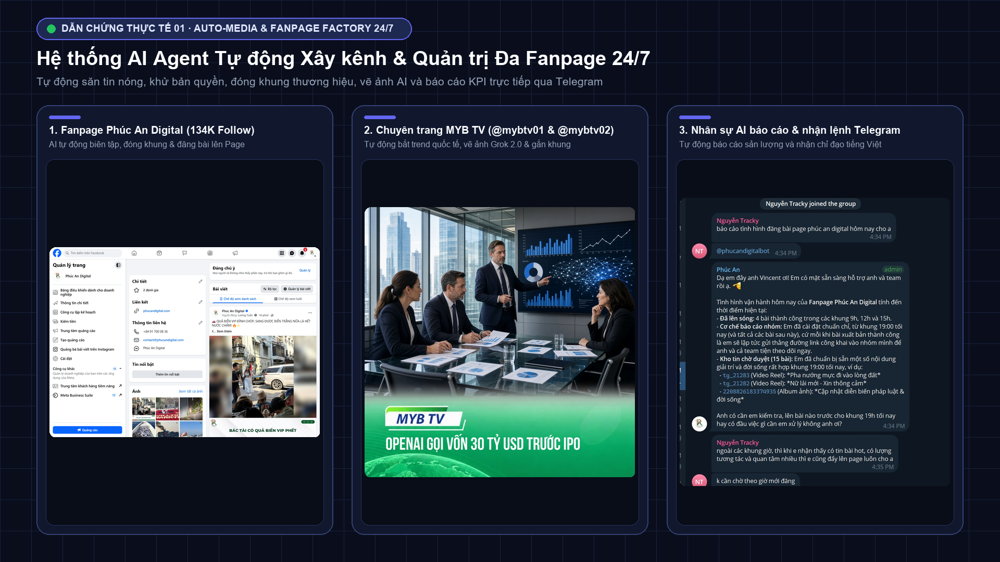
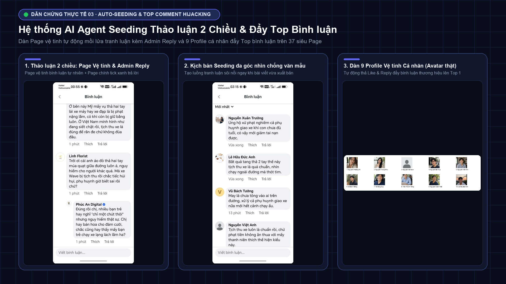
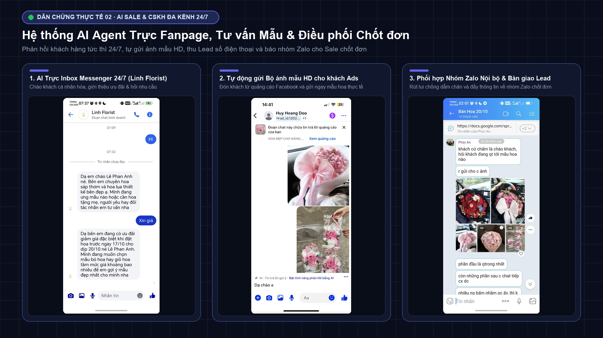
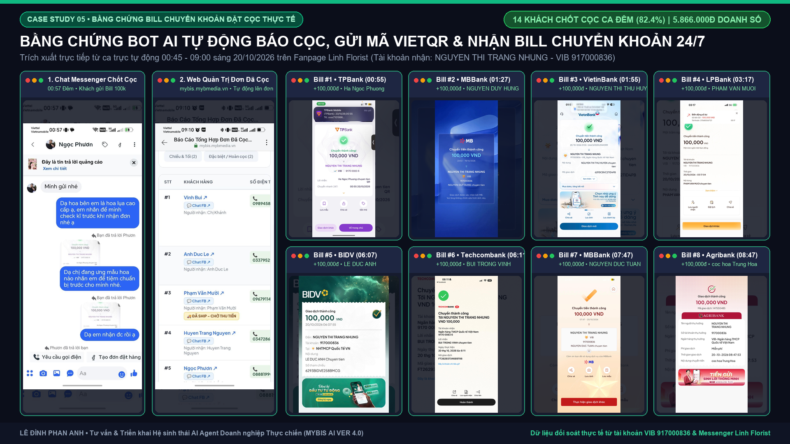
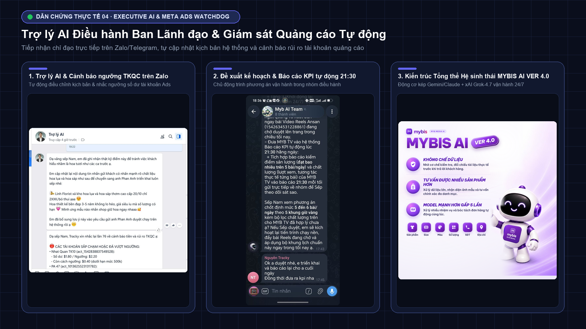
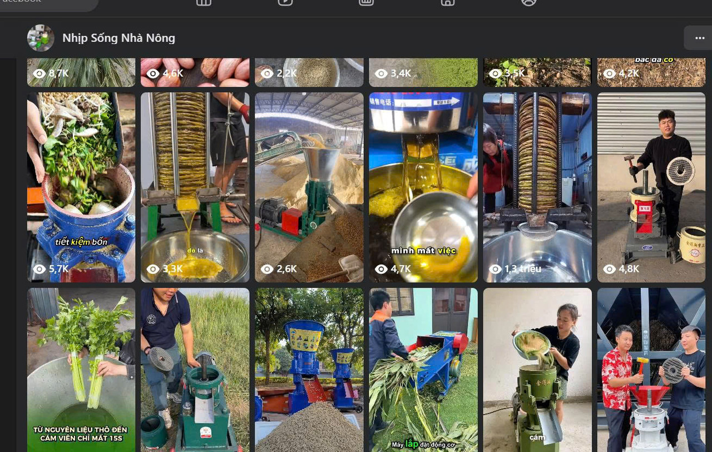

Công cụ hỏi đáp bị động
Nhân sự vẫn phải ngồi gõ lệnh, copy-paste thủ công từng bước và AI không tự kết nối được với Zalo, Fanpage hay CRM công ty.
KIẾN TRÚC SƯ HỆ THỐNG MYBIS AI VER 4.0
Thay thế quy trình thủ công rời rạc bằng Hệ điều hành Nhân sự AI tự chủ (Mybis AI Ver 4.0): tự động xây kênh Fanpage, seeding kéo phễu, trực inbox chốt đơn, giám sát Meta Ads và báo cáo điều hành 24/7.
Đội ngũ 10+ AI Agent tự kết nối API, săn tin, xử lý ảnh/video, xuất bản nội dung, trực inbox báo cọc VietQR, thu Lead và gửi báo cáo điều hành.
ĐIỂM NGHẼN THỰC TẾ
Nhân sự vẫn phải ngồi gõ lệnh, copy-paste thủ công từng bước và AI không tự kết nối được với Zalo, Fanpage hay CRM công ty.
Khách nhắn tin đêm khuya hoặc lệch múi giờ phản hồi chậm làm rớt đơn; Fanpage thiếu người chăm sóc đều đặn mỗi ngày.
Mỗi nhân viên dùng AI một kiểu, dễ lộ giọng "văn mẫu AI", không lưu giữ được quy trình SOP và số liệu thực chiến của doanh nghiệp.
GIẢI PHÁP AI CHỦ LỰC · MYBIS AI VER 4.0
Kết hợp động cơ kép Gemini/Claude + xAI Grok-4.7, thị giác máy tính Computer Vision và bộ nhớ doanh nghiệp Second Brain.
Tự động quét tin nóng đa nguồn, viết lại chống văn mẫu AI, dùng Computer Vision cắt sạch watermark, đóng khung thương hiệu 9:16 & tự tối ưu giờ vàng từ Meta Graph API.
Tự động điều phối Page vệ tinh mồi lửa tranh luận kèm Admin Reply; tuần tra 37 siêu Page/Group (VTV24, Beatvn, CafeF...) mỗi 90 phút và đẩy bình luận lên Top 1.
Học sâu từ 1.450+ hội thoại thật trên Pancake/Messenger/Zalo, tự gửi ảnh mẫu HD, báo cọc VietQR và tự rút lui 100% khi nhân viên thật vào chat để báo nhóm Zalo trong 3 giây.
Đồng bộ thời gian thực chi tiêu (Spend), Mess, Cmt, CPR từ Meta Ads; tự động điền Google Sheets mỗi sáng và cảnh báo ngay khi số dư hoặc chiến dịch vượt ngưỡng.
Tự động hóa kịch bản phân cảnh, khóa đồng nhất nhân vật & giọng đọc, render video dọc 1080x1920 phụ đề Kinetic, xuất Slide .pptx và giao diện Webcake .pke.
Tham gia trực tiếp nhóm điều hành Zalo/Telegram/Lark với vai trò Chánh văn phòng: bắt mạch hội thoại, phân việc Kanban và nhắc việc khẩn cấp sau 5 phút.
LỘ TRÌNH CHUYỂN ĐỔI AI DOANH NGHIỆP
Thiết kế theo cấp độ tăng trưởng rõ ràng để doanh nghiệp làm chủ hoàn toàn công nghệ mà không bị ngợp.
Chuẩn hóa tư duy AI cho từng phòng ban (Marketing, Content, Sale, HR), xây dựng thư viện Prompt chống văn mẫu xử lý việc hàng ngày.
Đóng gói 540+ quy trình nội bộ, kịch bản chốt sale, bảng giá và hồ sơ khách hàng vào kiến trúc bộ nhớ Second Brain 3 lớp.
Đấu nối đội ngũ AI Agent chuyên trách trực tiếp vào Zalo, Telegram, Fanpage, Pancake, Google Sheets, Meta Ads và Lark Suite.
Chủ doanh nghiệp kiểm soát linh hoạt 4 chế độ (Suggest → Read Docs → Auto → Full) kèm cơ chế Self-Healing chạy bền bỉ 24/7.
GÓI ĐỒNG HÀNH
QUY TRÌNH TƯ VẤN & TRIỂN KHAI
Chẩn đoán luồng việc hiện tại, chỉ ra khâu tự động hóa bằng AI Agent và ước tính tỷ lệ ROI tiết kiệm 75–85% nhân lực.
Thiết kế sơ đồ luồng dữ liệu, phân quyền an toàn 4 cấp, bộ quy tắc thương hiệu và kịch bản cho từng vị trí Agent.
Cài đặt hệ thống Agent, nạp 540+ dữ liệu lịch sử vào Second Brain và đấu nối Zalo, Telegram, Fanpage, Pancake, Ads.
Vận hành thực tế dưới sự giám sát chéo, tinh chỉnh chất lượng nội dung và phản hồi theo vòng lặp Closed-Loop.
Đào tạo nhân sự phối hợp nhịp nhàng với dàn AI Agent trên Zalo/Telegram và mở rộng kỹ năng mới lâu dài.
TÁC VỤ VẬN HÀNH THỰC CHIẾN
DỰ ÁN & DẪN CHỨNG THỰC CHIẾN 24/7
Bấm vào từng dự án để xem chi tiết Bài toán, Giải pháp kiến trúc và Hình ảnh minh chứng vận hành thực tế 24/7.

Kiến trúc Hệ điều hành Trợ lý AI Doanh nghiệp với hơn 10+ AI Agent chuyên trách (Javis Core, Mỹ Linh, Chiến lược gia Marketing, Chuyên gia SEO, Phúc An Digital, Trợ lý Sếp Nam, Chánh văn phòng) kết hợp bộ nhớ 540+ Facts Second Brain và trực tiếp đào tạo AI thực chiến cho EVN, EVNHANOI, Elite PR School.

250.000+ Views / 50 Reels · 134K Follow 🔍 Xem ảnh thực tếVận hành đồng thời Phúc An Digital (tick xanh 134K follow) & 2 trang MYB TV: tự săn tin, khử watermark, vẽ ảnh Grok 2.0 và báo cáo Telegram.
Xem bài toán, giải pháp & ảnh dẫn chứng →
37 Siêu Fanpage · 9 Profile đẩy Top 1 🔍 Xem ảnh thực tếTự động tuần tra 37 siêu Fanpage/Group mỗi 90 phút, bình luận bắt trend dưới tên Page chính và điều động 9 Profile vệ tinh đẩy lên Top 1.
Xem bài toán, giải pháp & ảnh dẫn chứng →
1.450+ Hội thoại · Phản hồi 100% 24/7 🔍 Xem ảnh thực tếHuấn luyện trên 1.450+ hội thoại thật (Pancake/Messenger/Zalo), tự gửi ảnh mẫu HD, thu SĐT và tự rút lui chống dẫm chân khi Sale vào chat.
Xem bài toán, giải pháp & ảnh dẫn chứng →
14 Khách chốt cọc ca đêm (82.4%) 🔍 Xem 8 Bill thực tếTrích xuất trực tiếp từ ca trực tự động 00:45 – 09:00 sáng: chốt cọc thành công 14 khách (82.4%), tự nhận diện bill chuyển khoản và lên đơn.
Xem đối soát 8 Bill ngân hàng thực tế →
Cảnh báo TKQC Zalo · Báo KPI 21:30 🔍 Xem ảnh thực tếTiếp nhận chỉ đạo của CEO ngay trên Zalo/Telegram để cập nhật kịch bản hệ thống, cảnh báo ngưỡng số dư TKQC và báo cáo KPI lúc 21:30.
Xem bài toán, giải pháp & ảnh dẫn chứng →
6.000+ KH/tháng · Video 1M+ View 🔍 Xem chi tiết dự ánXây dựng 15 kênh nội dung Video AI đạt trên 1 triệu view (6.000+ KH/tháng) và tối ưu quy trình sản xuất đa kênh cho đội ngũ 30+ nhân sự.
Xem chi tiết bài toán & kết quả thực tế →NGƯỜI ĐỒNG HÀNH CÙNG DOANH NGHIỆP
Tư vấn & Triển khai AI Doanh nghiệp · Leader AI tại MYB Media · Kiến trúc sư Hệ điều hành AI Agent Mybis (Ver 4.0)
Tốt nghiệp Cử nhân loại Giỏi chuyên ngành Quản trị Truyền thông Đa phương tiện & Marketing tại Đại học FPT Hà Nội và sở hữu chứng chỉ Giảng viên AI từ Google (Gemini Certified Educator). Phan Anh trực tiếp kiến trúc hệ thống hơn 10+ AI Agent chuyên trách tự vận hành 24/7 (tiết kiệm 75%–85% khối lượng vận hành lặp lại) và đồng hành đào tạo AI thực chiến cho nhiều tập đoàn, doanh nghiệp lớn.
Chứng chỉ Quốc tế về Đào tạo & Ứng dụng Trí tuệ Nhân tạo từ Google
CÂU HỎI THƯỜNG GẶP
Bạn có thể trao đổi trực tiếp 1:1 cùng Phan Anh để khảo sát luồng việc và nhận lộ trình phù hợp nhất.
ChatGPT thông thường là công cụ bị động (phải có người ngồi gõ lệnh, copy-paste từng bước và không tự kết nối được với phần mềm công ty). Trong khi đó, AI Agent (như hệ thống Mybis) là một "nhân sự số" làm việc chủ động 24/7: tự quét dữ liệu, tự xử lý hình ảnh/video, tự đăng bài, tự trả lời khách, tự báo cáo vào Zalo/Telegram và tích lũy bộ nhớ riêng cho doanh nghiệp.
Hoàn toàn không. Hệ thống sử dụng kiến trúc đa mô hình (kết hợp Gemini/Claude với bộ đồng xử lý xAI Grok-4.7) cùng bộ lọc Anti-Slop 3 lớp và học trực tiếp từ 1.450+ hội thoại thật cũng như công thức của các Fanpage lớn nhất Việt Nam, đảm bảo câu chữ tự nhiên, đời thực và đúng bản sắc thương hiệu.
Hệ thống có cơ chế Chống dẫm chân thông minh: ngay khoảnh khắc phát hiện nhân sự thật nhắn tin trong hội thoại hoặc khi khách hàng bước sang giai đoạn hỏi giá/chốt đơn chuyên sâu, AI tự động rút lui 100% và chuyển thông tin Lead sang nhóm Zalo nội bộ trong chưa đầy 3 giây để nhân sự thật toàn quyền chăm sóc.
Toàn bộ dữ liệu nhạy cảm (Token, tài khoản, lịch sử khách hàng, bộ nhớ Second Brain) được lưu trữ độc lập trên máy chủ riêng của doanh nghiệp, kết hợp cơ chế phân quyền 4 cấp độ (Suggest, Read Docs, Auto, Full). Doanh nghiệp nắm 100% quyền sở hữu dữ liệu và có thể bật/tắt từng Agent bất cứ lúc nào.
Hoàn toàn vận hành dễ dàng. Mọi điều khiển hằng ngày đều được thực hiện bằng tiếng Việt tự nhiên ngay trên Zalo hoặc Telegram (như giao việc cho một nhân viên bình thường) kèm bảng điều khiển Web trực quan và cơ chế Self-Healing tự động giám sát, khởi động lại 24/7.
BẮT ĐẦU NGAY HÔM NAY
Liên hệ trực tiếp với Lê Đình Phan Anh để được tư vấn 1:1 giải pháp phù hợp nhất.